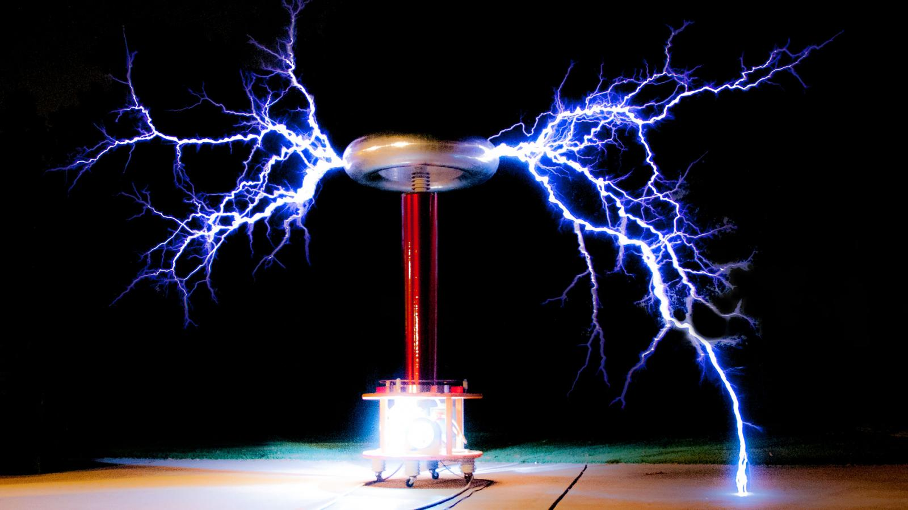

⚡ About the Tesla Coil
Welcome to an exploration of one of the most fascinating demonstrations of high-voltage electricity — the Tesla Coil. Named after the legendary inventor Nikola Tesla, the Tesla Coil is a remarkable electrical device that uses the principles of electromagnetic induction and resonance to generate extremely high voltages at high frequencies. The spectacular electrical arcs it produces are not just visually impressive; they are a direct demonstration of how electrical energy can be transferred and amplified through carefully tuned circuits. In this project, I Yash Vardhan Singh and my companion Saksham Prakash explore the science behind the Tesla Coil, from its fundamental components and working principle to the physics of resonance, high-frequency current, and electromagnetic fields. Step into the world of high-voltage science — where invisible electromagnetic energy becomes visible.
🔬 How Does It Work?
A Tesla Coil works on two key principles of physics: electromagnetic induction and electrical resonance. Instead of simply increasing voltage like an ordinary transformer, it uses resonance to transfer energy efficiently between two specially tuned coils.
01 — Energy Enters the Primary Circuit
The process begins when electrical energy is supplied to the primary circuit. This circuit contains the primary coil and a capacitor or electronic driver that allows energy to oscillate at a particular frequency.
02 — The Primary Coil Creates a Magnetic Field
As alternating current flows through the primary coil, it produces a changing magnetic field around the coil. This rapidly changing field is the mechanism that allows energy to be transferred to the secondary coil.
03 — Resonance Amplifies the Effect
The primary and secondary circuits are designed to have similar resonant frequencies. When they are properly tuned, energy is transferred between them efficiently through electromagnetic coupling.
This phenomenon is called resonance. It is similar to pushing a swing at exactly the right time — small, repeated inputs can produce a much larger oscillation.
04 — Voltage Rises in the Secondary Coil
The secondary coil contains many more turns of wire than the primary coil. As energy builds up in the secondary circuit, the electrical potential can reach very high voltages.
The voltage is concentrated near the top of the secondary coil, where a top-load or toroidal structure is often used to control the electric field and help the system resonate at its intended frequency.
05 — The Electric Field Becomes Visible
When the electric field around the top of the coil becomes sufficiently strong, it can ionize the surrounding air. The ionized air becomes electrically conductive, producing the characteristic glowing streamers and sparks associated with a Tesla Coil.
⚙️ Main Components
🌀 Primary Coil
The primary coil is made from a relatively small number of turns of thick conductive wire or tubing. It carries a large oscillating current and creates the changing magnetic field that transfers energy to the secondary coil.
🧲Secondary Coil
The secondary coil consists of many turns of comparatively thin insulated wire. Through electromagnetic coupling and resonance, energy is transferred from the primary circuit into the secondary circuit, producing a very high voltage.
⚡Capacitor
The capacitor stores electrical energy and releases it into the primary circuit. Together with the primary coil, it forms an LC resonant circuit.
🟠 Top Load
The top load, often shaped like a toroid or sphere, is connected to the top of the secondary coil. It stores electrical charge, influences the resonant frequency, and helps control the electric field around the coil.
⚡ Working Process
01 — 🔋Energy Input
Electrical energy is supplied to the Tesla Coil through its power supply and driver circuit. The driver delivers energy to the primary circuit in a controlled, rapidly changing form.
02 — 🌀Oscillation
The primary coil and capacitor form an oscillating electrical circuit. Energy moves back and forth between the capacitor's electric field and the coil's magnetic field, producing a high-frequency electrical oscillation.
03 —🔄 Resonance
Resonance is the phenomenon that allows a Tesla Coil to build up a very large voltage from a relatively smaller input. It occurs when the electrical oscillations in the primary circuit are tuned to the natural resonant frequency of the secondary circuit.
04 —⚡ High Voltage
As energy accumulates in the secondary resonant circuit, a very high voltage develops at the top of the secondary coil. The top load helps store charge and shape the electric field. When the electric field becomes strong enough, it can ionize the surrounding air, producing the characteristic glowing streamers and sparks.
🌐 Applications
⚡ Wireless Power: Demonstrates the principles of wireless energy transfer. 📡 High-Frequency Research: Used to study high-frequency electrical phenomena. 🔬 Science Education: Demonstrates resonance, electromagnetic induction, and high voltage. 🧪 Laboratory Experiments: Used for controlled high-voltage and electrical discharge experiments. 🎭 Exhibitions & Displays: Creates spectacular electrical sparks for science demonstrations.
💡 Conclusion
The Tesla Coil is a fascinating demonstration of electromagnetic induction, oscillation, and resonance. By transferring energy between tuned circuits, it can produce extremely high voltages and visible electrical discharges. This project by us ( Yash Vardhan Singh and Saksham Prakash ) shows how fundamental principles of physics can combine to create one of the most spectacular demonstrations in electrical science. “Where resonance turns electrical energy into a visible phenomenon.”